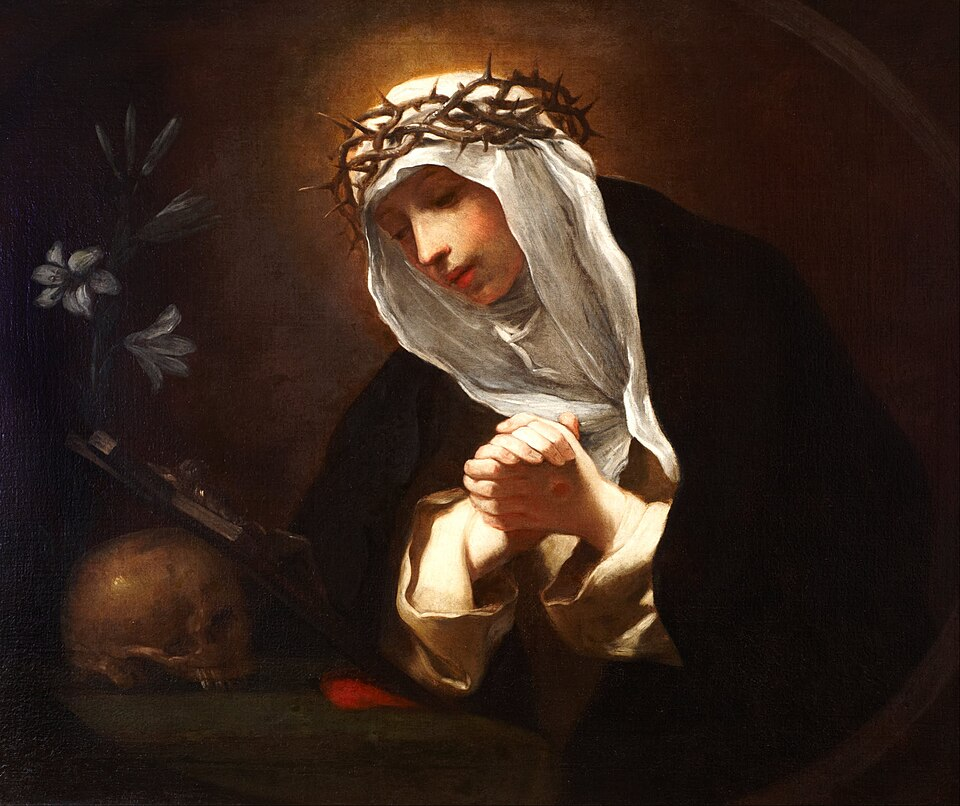
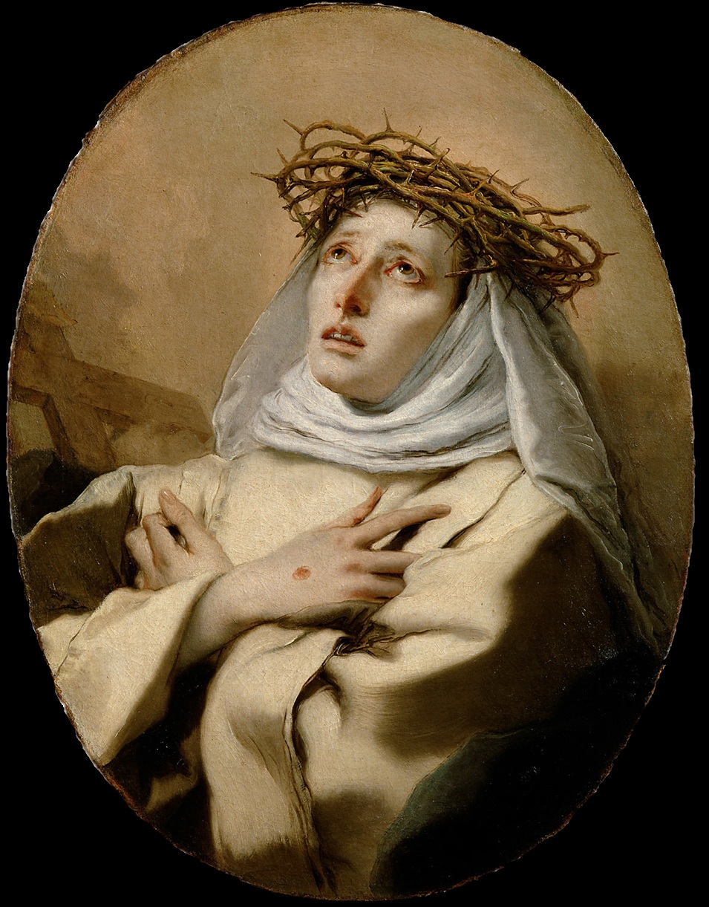
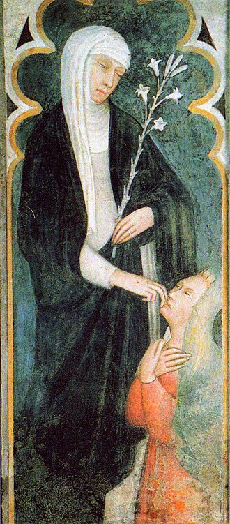
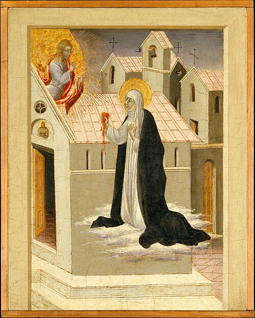
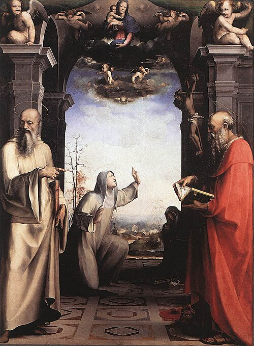
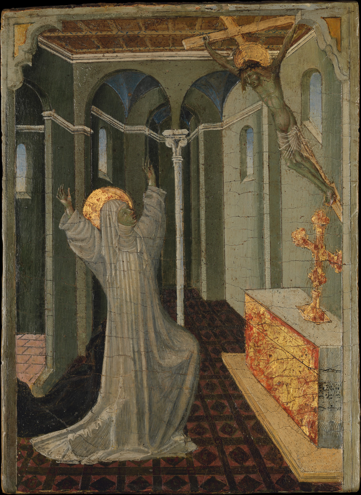

Santa Catarina de Sena
Virgem, Mística, Padroeira da Itália e da Europa.
Sua coragem mudou a história da Igreja.
Palavras que Transformam
Descubra Catarina de Sena
Biografia
Da infância em Siena às portas do Vaticano — a vida extraordinária de uma mulher que nunca teve medo.
Obras
O Diálogo, 382 cartas e 26 orações — escritos que continuam a nutrir almas há seis séculos.
Siena
Visite os lugares sagrados: a casa natal, a Basílica de São Domingos e as relíquias.
Oratório
Acenda uma vela virtual e ore com Santa Catarina. Um momento de silêncio e presença.
Eventos
Missas, palestras e encontros em honra de Santa Catarina. Fique por dentro.
O Diálogo
Leia sua obra-prima — uma conversa entre a alma e Deus, repleta de luz e misericórdia.
Arte e Devoção
Obras que atravessaram séculos em sua homenagem

Baldassare Franceschini Ver detalhes
Giovanni Battista Tiepolo Ver detalhes
Andrea Vanni, San Domenico Ver detalhes
Giovanni di Paolo Ver detalhes
Domenico Beccafumi Ver detalhes
Recebendo os Estigmas Ver detalhesRede de Virtudes
Virtudes, citações e episódios entrelaçados na vida de Santa Catarina
"Se fores o que deves ser, porás fogo no mundo inteiro."
— Santa Catarina de Sena, Carta 368